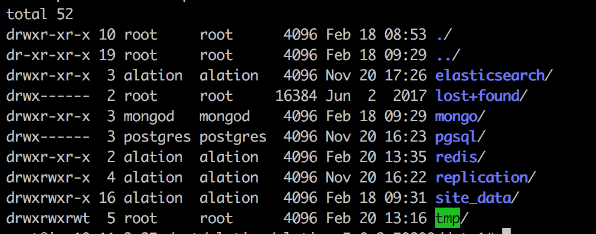
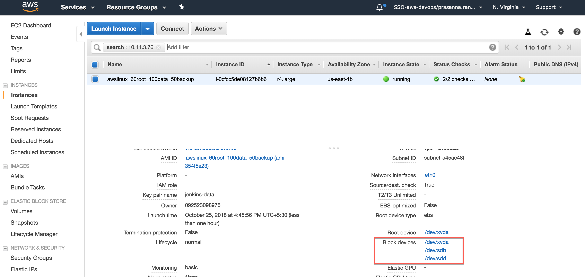
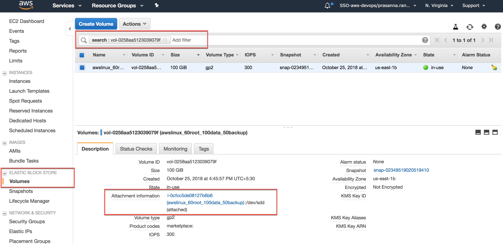
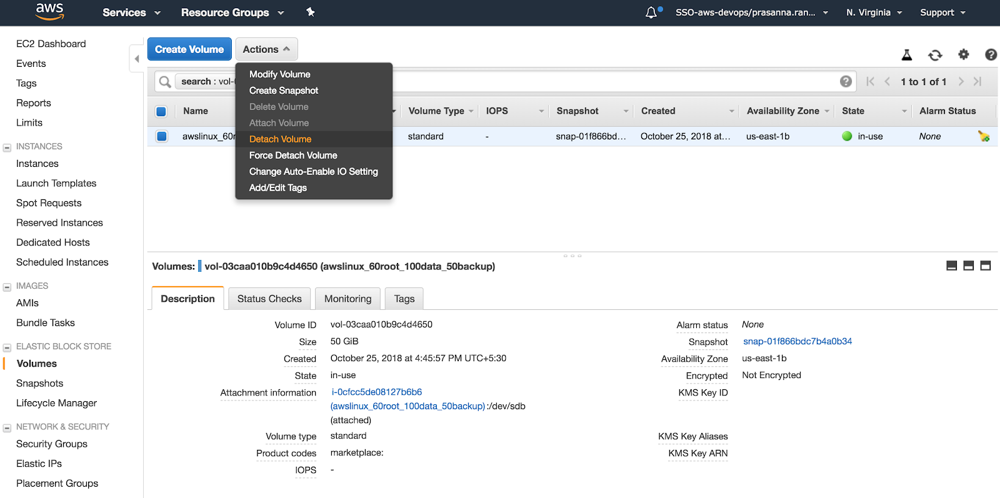
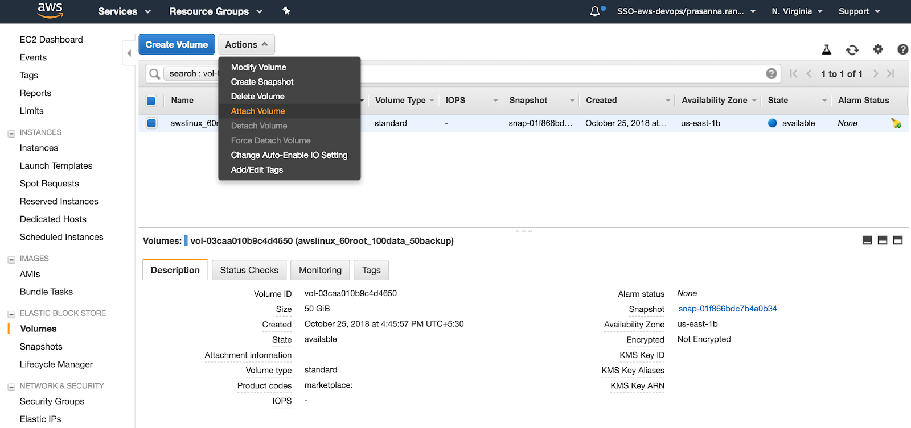
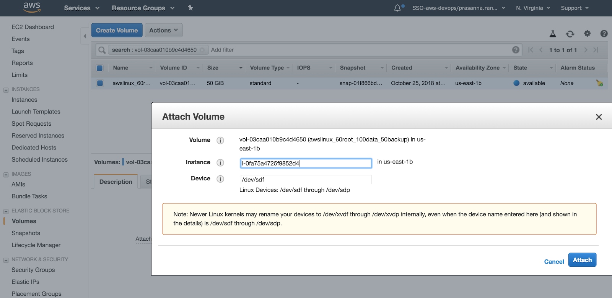

How to Mount Data Volumes on New Virtual Instances¶
Customer Managed Applies to customer-managed instances of Alation
Available from version V R5 (5.9.x)
Prerequisite¶
Alation is installed in a virtual instance that uses virtual data volumes, for example, in AWS EC2.
Goal¶
This article describes the process to be followed in the case you want to move the data and backup drives from an Alation instance you want to deprecate to a new Alation system. This, in effect, enables you to move your data from one system to another without needing to restore from an Alation backup.
The new Alation system should be running the same (or higher) version of Alation as the original system. This guarantees compatibility between the structure of the data and backup drives and the running software.
If moving the drives to an Alation system running a higher version of the binaries, make sure the updated version is no more than two releases higher. For example, R4 to R6 would be supported. R4 to R7 would not. Note that downgrade is not supported.
Note
This procedure has only been tested for AWS EC2.
For AWS-specific instruction see Step-by-Step Volume Remounting For AWS EC2 , below.
Moving Data Volumes to a New Instance¶
Step 1. Remount the data volumes from the old to the new Alation instance¶
Stop the old instance that you are going to deprecate.
Unmount the existing data volumes
/dataand/backupfrom the old instance. Make sure the alation service is stopped before un-mounting.umount /data umount /backup
Note
Names
/dataand/backupare used as sample names of the data disk mount points. Mount points may have different names in your instance.After unmounting, you will need to detach these volumes from the current virtual machine and attach to the new one. Detaching and attaching steps will depend on the cloud services provider you are using.
After you detach and attach to a new machine, mount the existing volumes
/dataand/backupon the new instance where you will install Alation.get the device name (eg. xvdf, xvdg) after the volumes are attached to the new machine:
lsblk
create directories /data (100 GB size) and /backup (50 GB size) if not present and mount:
mount /dev/xvdf /data mount /dev/xvdg /backup cat /etc/fstab mount -a
Use SSH to connect to the machine of the new instance and verify that the volumes are attached. You can use the
lsblkcommand to do that.
Sample lsblk output:
{kind=link}
Step 2. Install the Alation binaries on the new instance¶
Install the Alation binaries on the new instance.
sudo rpm -ivh alation####.rpm
or
sudo dpkg -i alation####.deb
Important
Do NOT run the
service alation init /data /backupcommand on the new instance.Run the following script to create the
.disk1_cacheand.disk2_cachefiles:cd /opt/alation/alation echo "/data" > .disk1_cache echo "/backup" > .disk2_cache
Note
Names
/dataand/backupare default names of the data disk mount points. Mount points may have different names in your instance.Start Alation:
sudo service alation start
Run the following permissions script:
sudo service alation shell alation_chmod_permissions
Verify that the permissions on the data volumes are set correctly. You can use the
ls -l(ll) command to check permissions.Expected permissions and ownership
Directory
Expected Permissions
Group and User
./drwxr-xr-xroot root
../dr-xr-xr-xroot root
elasticsearchdrwxr-xr-xalation alation
lost+founddrwx------root root
mongodrwxr-xr-xmongod mongod
pgsqldrwx------postgres postgres
redisdrwxr-xr-xalation alation
replicationdrwxr-xr-xalation alation
site_datadrwxr-xr-xalation alation
tmpdrwxrwxrwtroot root
Sample Permissions Check:
Validate that the base URL is working and pointing to the new instance by entering the new instance IP address in the browser. If it is redirected to the old Instance, change the base URL to point to the new instance.
{kind=link}
For details on the base URL, refer to How to Change the Base URL.
Now you have remounted the data volumes to your new Alation instance.
Step-by-Step Volume Remounting For AWS EC2¶
In AWS EC2, you can detach the existing EBS volumes from a EC2 instance and re-mount them to a new instance using AWS EC2 Admin UI.
This section includes a step-by-step instruction for re-mounting EBS volumes holding Alation’s data disks to a new AWS EC2 instance that will host Alation.
Stop the existing AWS Instance that has the to-be-remounted data volumes attached to it.
Find the EBS volumes which need to be detached. Look under Block devices.
These volumes hold Alation’s
/dataand/ backupdata disks.Note
Names
/dataand/backupare used as sample names of the data disk mount points. Mount points may have different names in your instance.Block devices example:

{kind=link}
Click each block device volume to get the volume ID. Save the ID: it will be used for finding the corresponding volume.
In the menu, go to Volumes and search for each EBS Volume details using the ID. You will find the volume attachment information for this EC2 instance.
Before detaching, make sure the Instance is stopped. To detach,click Actions then Detach Volume for each volume.
After being detached, the EBS volumes will be in the
Availablestate and available for re-mounting.To attach the volumes to the new instance, you need the new instance ID. Copy and save the new instance ID to be used for attaching the volumes.
Attach each volume to the new instance. For each volume, click Actions then Attach Volume then paste the new instance ID to the Attach Volume dialog.
 Follow the volume mounting instruction from Install the Alation binaries on the new instance and complete the setup.
{kind=link}
{kind=link}
{kind=link}
{kind=link}